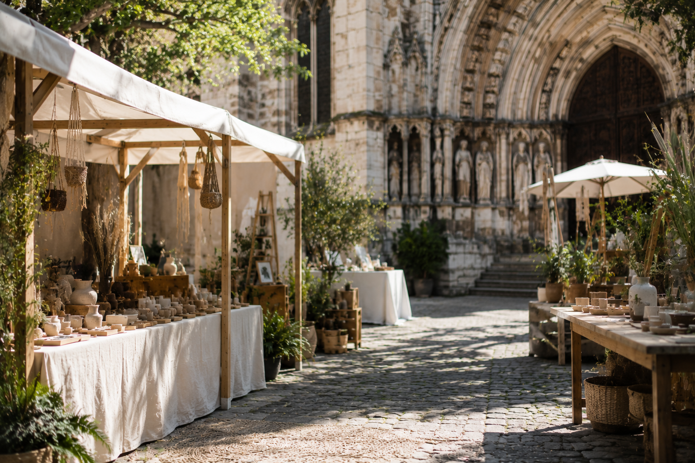

Workshop
Block Printing Workshop
Collaborative textile printing where visitors self-print, experience the pressure of the block, and add to a shared textile surface.

A focused programme of craft participation, material culture, sound, fragrance, botanical knowledge, and spatial reflection.
Collaborative textile printing where visitors self-print, experience the pressure of the block, and add to a shared textile surface.
Live clay making shaped as storytelling through craft, earth, hand, form, and inherited technique.
Indian language exploration with visitor participation through writing, stencils, and guided mark-making.
Contemporary draping exploration that treats six yards of fabric as design, identity, sculpture, and personal movement.

A sustainable styling experience using textile reuse for fashion experimentation and personal expression.
A collective wall installation where each visitor contributes through sticker placement, plus a public Rangoli sand-art competition open to all ages.
Hands-on henna art workshop where visitors experience traditional Indian mehndi patterns — a festive craft blending creativity, heritage, and sensory memory.

Interactive beauty station with bindis in varied shapes, colours, and designs, plus small hand-painted motifs around the eyes and forehead inspired by henna and traditional Indian art.

Spices are presented through agricultural heritage, colour, texture, and global trade significance.

Material ingredients, craftsmanship, memory, and cultural storytelling through fragrance history.

Beauty and wellness traditions presented through ingredient exploration and material heritage.

Craftsmanship of instrument-making, resonance, tactile rhythm exploration, performance traditions, and visitor interaction.

A curated collection of traditional and contemporary jewellery — jhumkas, bangles, anklets, nose rings, and layered necklaces inspired by different regions of India.
A curated display of Indian paintings, miniatures, folk art, and contemporary works, alongside a textile showcase of handloom, block-print, and embroidery.

The centrepiece of the event. Opens with a formal ceremony featuring the Consul General of India and a Comune di Milano representative.
Followed by classical Kathak and Bharatanatyam dance, a professional Bollywood medley troupe, and a live Sitar & fusion music ensemble.
Consul General of India & Comune di Milano representative.
Classical Indian dance performances.
Professional contemporary Bollywood performance.
Live music performance.
A street-food style area with regional stalls covering North, South, East, and West Indian cuisines. A live dialogue between India's culinary heritage and Milan's food culture.
Includes a Masala Chai corner and traditional Indian sweets. All operators hold valid food permits, and eco-friendly packaging is required throughout.


"OM" is treated as the form of the universe — a continuous cycle of creation, existence, and return.
Inspired by ancient temple carvings where life is shown emerging within sacred sound forms, the installation reflects the idea of origin held inside the symbol itself.
The umbilical cord becomes the visual thread of life, connecting beginning and becoming in one unbroken flow.
The stall translates this into an immersive experience where the body moves through cycles of birth, growth, and return.